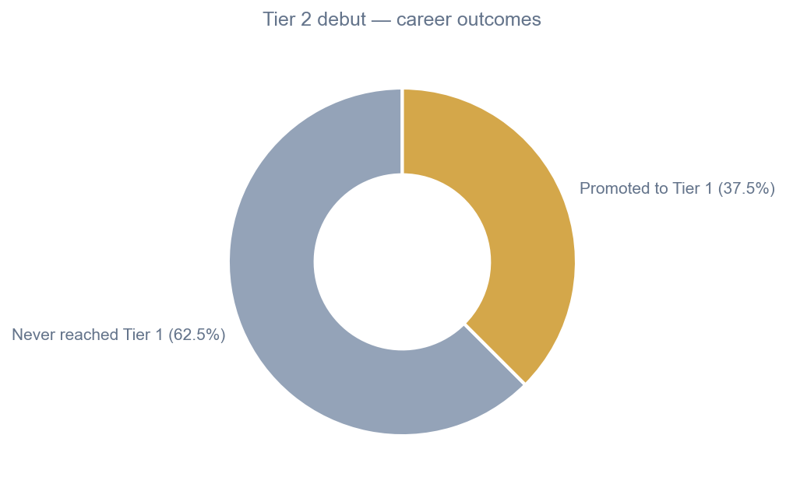
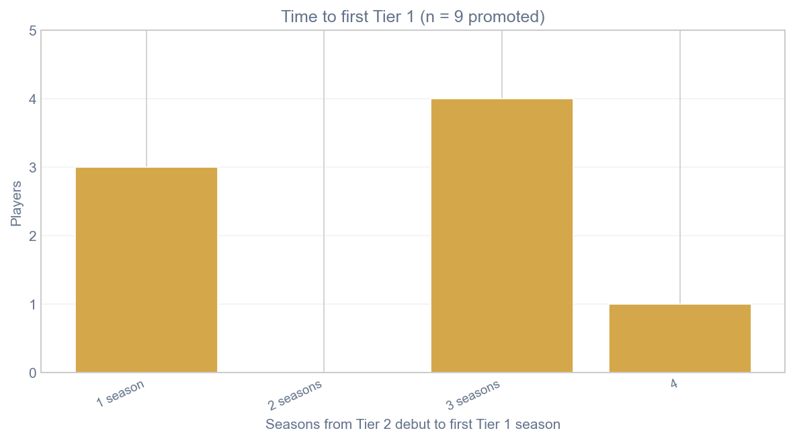
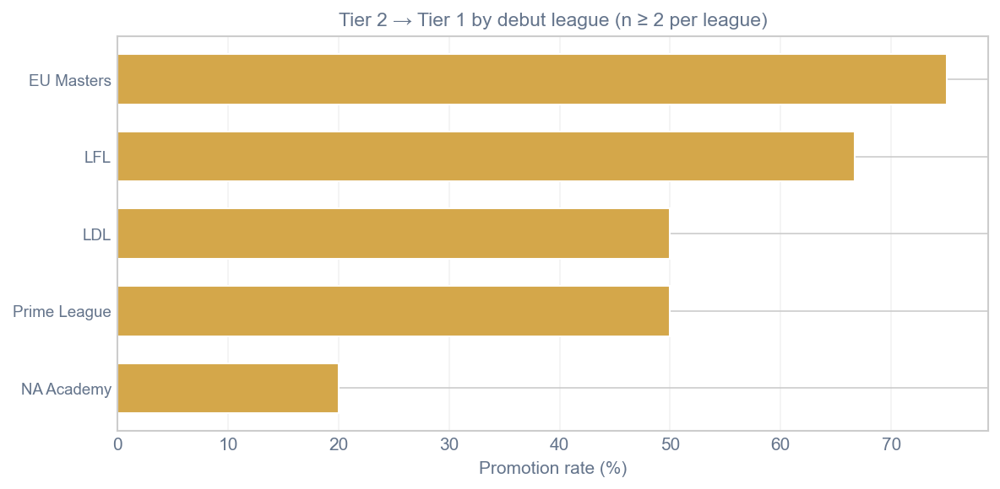
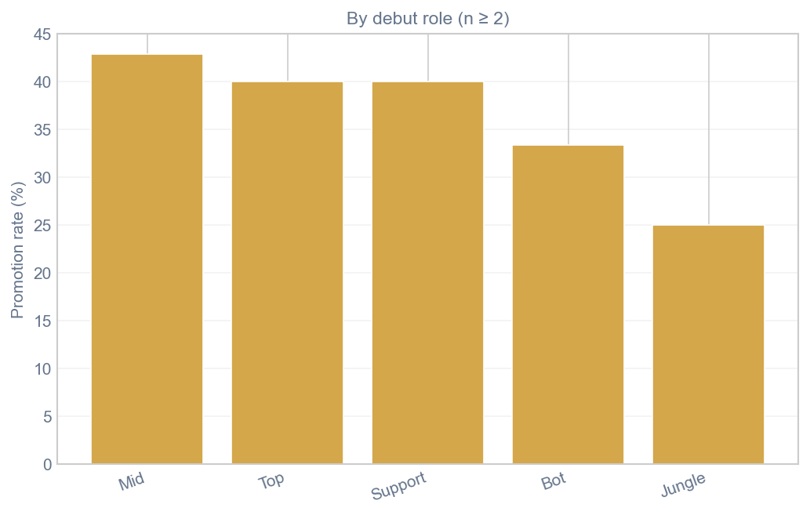

Hypothesis 2: Tier 2 to Tier 1 Transition Rates
Research Question: How often do players successfully transition from Tier 2 developmental leagues to Tier 1 professional play?
Hypothesis: The majority of Tier 2 players never reach Tier 1 competition.
Those who do often make the transition within their first few professional seasons, suggesting a critical
developmental window for player promotion.
Summary
Panel snapshot: — · — unique players in roster pull · — with Tier-2 debut (see methodology).
Key finding
Loading summary from h2_summary.json…
Promotion outcomes
Cohort: players whose debut calendar year maps to a Tier 2 league under
data/h2/h2_league_tier_map.csv. “Reached Tier 1” means at least one later year appears in a Tier-1-mapped league.
Figures are rendered by src/analysis/h2_figures.py into reports/ and copied to site assets.
Tier 2 debut — career outcomes

Years from Tier 2 debut to first Tier 1 season
Among promoted players only (calendar-year difference; 0 = same year)

Promoted players (panel)
| Player | Debut league (T2) | Debut season | First T1 season | Years to T1 | Path |
|---|---|---|---|---|---|
| Loading… | |||||
Promotion rates by league & role
Among Tier-2 debuts only. League and role charts include groups with at least two players (bar charts); the table lists the top leagues by sample size from the current JSON export.
Promotion rate by debut league

Promotion rate by debut role

| League (T2 debut) | T2 debuts | Promoted | Promotion rate |
|---|---|---|---|
| Loading… | |||
By debut role
| Role | T2 debuts | Promoted | Promotion rate |
|---|---|---|---|
| Loading… | |||
Methodology & in-game performance
This hypothesis page is driven by the roster panel pipeline
(scrapers/pull_h2_roster_panel.py → src/analysis/build_h2_panel.py → src/analysis/h2_figures.py).
It does not yet merge game-level stats (KDA, CS/m, damage, gold). A prior exploratory pass used smaller curated samples;
those charts are removed here until we join the panel to a stats source (e.g. Games of Legends or Oracle’s Elixir) with clear season coverage.
Implications
Support for hypothesis (panel wording)
- Loading…
Regenerate assets: python scrapers/pull_h2_roster_panel.py → python src/analysis/build_h2_panel.py → python src/analysis/h2_figures.py